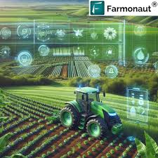

AI & Computer Vision Research

Capstone Learning Project, Grand Valley State University — Jan 2023 – Apr 2023
- Reimplemented CNN-based food classifier using Food-101 and Recipe1M+ datasets.
- Used TensorFlow for feature-embedding and similarity matching.
- Applied transfer learning with pre-trained VGG16 and ResNet to improve accuracy.
- Processed open food image data to study relationships between visual features and ingredients.
- Built Flask app for interactive image query and result display.
- Documented hyperparameter tuning and model comparison.

Undergraduate Project, CVR College of Engineering — Aug 2018 – May 2019
- Implemented a facial-recognition ATM prototype using OpenCV and TensorFlow.
- Combined biometric verification with PIN entry for secure dual-factor authentication.
- Normalized brightness and detected tampering under varied lighting.
- Evaluated system behavior on public face datasets and integrated local database.

Independent Learning Project — Mar 2022 – Jul 2022
- Implemented YOLOv5 on BDD100K/COCO road datasets.
- Tuned bounding boxes, confidence thresholds, and anchor boxes.
- Integrated OpenCV for real-time inference and Raspberry Pi deployment.
- Logged precision-recall metrics and FPS benchmarks.
Data Analytics & Engineering Projects

Independent Learning Project — Python / Scikit-learn — 2023
- Reproduced open-source crop-recommendation workflows from Kaggle datasets.
- Compared Decision Tree, Random Forest, and Logistic Regression models.
- Analyzed correlation of soil pH, rainfall, and temperature with yield.
- Built CLI for entering soil parameters and viewing predictions.

Learning Project — R / Shiny / Plotly — 2023
- Cleaned price and volume data with
dplyrand created time-series usingxts. - Added moving averages, volatility, and interactive Plotly charts.
- Built multi-tab dashboard with date filters and coin comparisons.
Coursework Project — Python / Pandas / K-Means — 2022
- Cleaned metadata (genre, release year, ratings) and applied K-Means + PCA.
- Visualized regional and temporal viewing trends with bar charts and heatmaps.
- Evaluated clusters using silhouette scores and modular Python scripts.

Practice Project — Tableau / Excel — 2022
- Processed global sales data and fixed inconsistencies.
- Built dashboards highlighting publishers, genres, and yearly trends.
- Added filters for region, year, and genre; visualized platform performance.
Learning Experiment — Azure Data Factory / SQL / Python — 2021
- Designed ELT using Transport for London datasets and Azure Data Factory.
- Wrote Python validation for schema enforcement and null handling.
- Built star-schema warehouse and Power BI dashboards for ridership and delays.